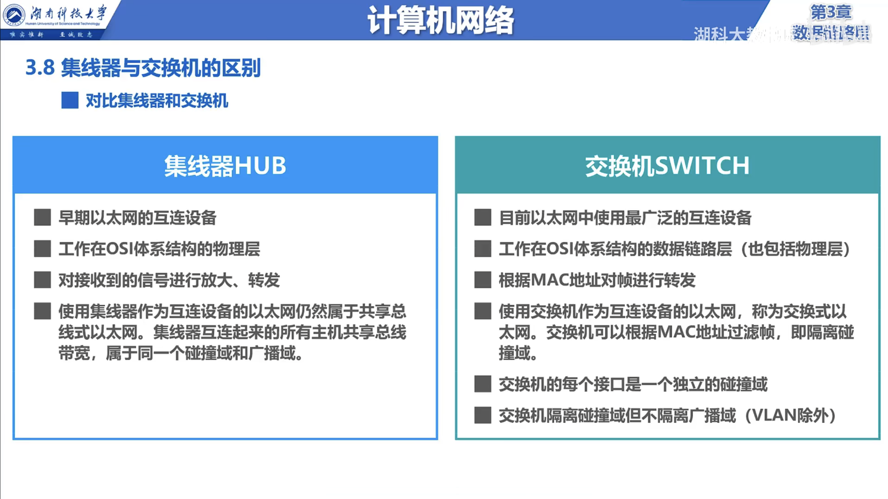
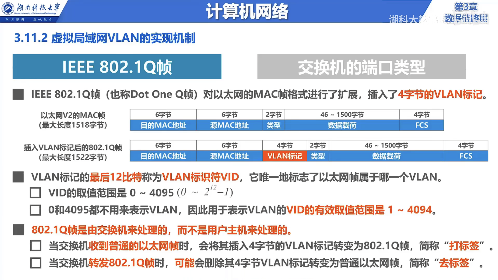
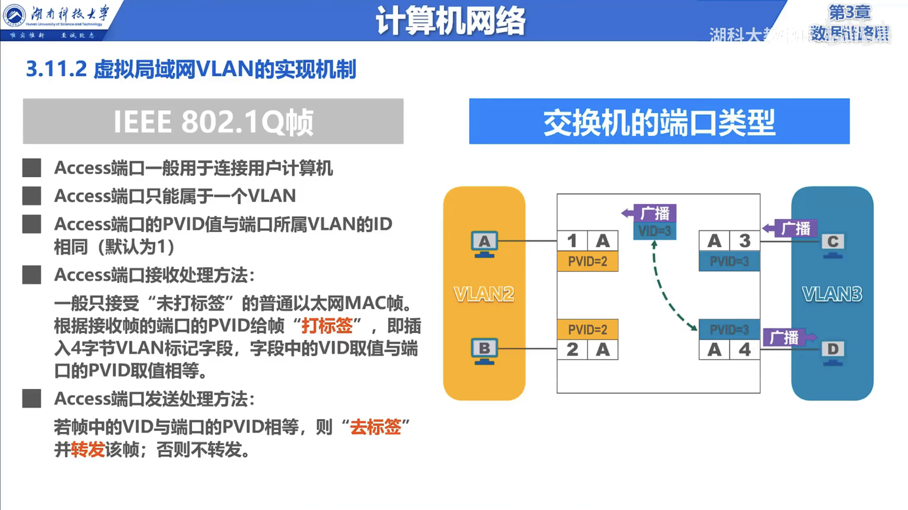

计算机网络杂记-07
集线器与交换机
使用双绞线和集线器 HUB 的星形以太网
使用集线器的以太网在逻辑上仍然是一个总线网，各站共享总线资源，使用的是 CSMA/CD 协议。
集线器工作在物理层，只是将收到的信号放大后再转发，不具备任何的逻辑功能。
集线器一般拥有少量容错能力以及故障管理能力，但是这些功能都是基于物理层的，而不是基于数据链路层的。
使用集线器 HUB 在物理层扩展以太网。但是，存在以下问题：
以太网的带宽是共享的，当网络中的主机数量增多时，带宽会越来越小。
以太网的冲突域是共享的，当网络中的主机数量增多时，冲突域会越来越大，冲突会越来越多，网络的性能会越来越差。
使用交换机 SWITCH 的以太网
以太网交换机通常有 24 个或 48 个端口，每个端口都是一个独立的冲突域，因此，以太网交换机可以将一个以太网划分成多个冲突域，从而提高网络的性能。
一般工作在全双工模式，因此，可以同时发送和接收数据，不会发生冲突。
一般工作在数据链路层，具有数据链路层的逻辑功能，可以识别以太网帧的 MAC 地址，从而可以根据 MAC 地址转发数据帧。
具有并行性，能同时连通多个端口，因此，可以同时转发多个数据帧。
交换机是一种即插即用的设备，其内部帧交换表是自学习的，不需要管理员配置。
使用两种交换方式：存储转发和直通转发

现在，以太网交换机已经成为以太网的主流设备，集线器已经被淘汰。
交换机自学习与转发
交换机是一种即插即用的设备，刚刚启动时，交换机的帧交换表是空的，交换机不知道哪个端口连接哪个主机，也不知道哪个 MAC 地址在哪个端口，因此，交换机需要学习。
流程：
当交换机收到一个数据帧时，交换机会提取数据帧中的源 MAC 地址，然后将源 MAC 地址和接收到该数据帧的端口号记录在交换机的帧交换表中。
当交换机收到一个数据帧时，交换机会提取数据帧中的目的 MAC 地址，然后在交换机的帧交换表中查找该目的 MAC 地址对应的端口号。
如果找到了，交换机就将该数据帧转发到该端口，否则，交换机就将该数据帧转发到所有的端口（广播）。
然而，交换机的帧交换表是会自动删除的，这是因为，当主机断开连接时，交换机就无法再收到该主机发送的数据帧，因此，交换机就无法再学习该主机的 MAC 地址，因此，交换机需要定期删除帧交换表中的记录。
交换机生成树协议 STP
交换机生成树协议 Spanning Tree Protocol，简称 STP，是一种链路层的网络协议，用于在有环路的以太网中防止广播风暴。
添加冗余链路，提高网络的可靠性。但是，添加冗余链路会导致环路，导致以下问题
广播风暴：大量消耗网络资源，导致网络瘫痪。
主机收到重复的广播帧，导致网络性能下降。
交换机的帧交换震荡：交换机的帧交换表中的记录不断变化，导致网络性能下降。
所以，需要一种协议来解决这些问题，这就是 STP。
不论网络中有多少个交换机，STP 都能够自动计算出一棵无环路的生成树，从而防止广播风暴。
最终生成的树型拓扑结构要连通整个网络；首次连接交换机或网络物理拓扑结构发生变化时，STP 会重新计算生成树。
STP 通过端口状态来防止帧交换震荡，从而提高网络性能。
虚拟局域网 VLAN
虚拟局域网 Virtual Local Area Network，简称 VLAN，是一种链路层的网络协议，用于在物理上将一个局域网分割成多个虚拟局域网，从而实现逻辑上的隔离。
巨大的广播域
以太网交换机可以将一个以太网划分成多个冲突域，从而提高网络的性能。但是，以太网交换机不能将一个以太网划分成多个广播域，因此，以太网交换机不能实现逻辑上的隔离。巨大的广播域会导致以下问题：
安全性差：网络中的主机可以通过 ARP 欺骗攻击等方式攻击其他主机。
网络性能差：网络中的主机可以通过大量的广播帧来消耗网络资源，导致网络瘫痪。
网络管理困难：网络管理员无法对网络中的主机进行有效的管理。
网络中会频繁出现广播信息
TCP/IP
- ARP 已知 IP 地址获取 MAC 地址
- DHCP 动态主机配置协议
- ICMP 互联网控制报文协议
- RIP 路由信息协议
NetBIOS
- NetBIOS Name Service
- NetBIOS Datagram Service
- NetBIOS Session Service
NetBEUI
- NetBEUI Name Service
- NetBEUI Datagram Service
- NetBEUI Session Service
IPX/SPX
- SAP 服务广播协议
- RIPX 路由信息协议
- NCP NetWare 核心协议
- SPX NetWare 传输协议
AppleTalk 苹果公司的网络协议
虚拟局域网 VLAN 技术
分割广播域的方法，可以使用路由器隔离广播域，但是路由器成本高，性能差，不适合在局域网中使用。
VLAN 可以将一个以太网划分成多个广播域，从而实现逻辑上的隔离。
VLAN 的实现方法
这需要交换机支持 VLAN 功能，交换机需要支持以下两种功能：
IEEE 802.1Q 协议
交换机端口类型

端口类型
Access 端口：连接主机的端口，只能属于一个 VLAN。
Trunk 端口：连接交换机的端口，可以属于多个 VLAN。
Hybrid 端口：连接主机的端口，可以属于多个 VLAN。但是思科交换机不支持该端口类型。
交换机各端口的省缺 VLAN ID
思科交换机：Native VLAN，即本征 VLAN
华为交换机：Port VLAN ID，即端口 VLAN ID, PVID
Access 端口
Access 端口只能属于一个 VLAN，因此，Access 端口只能接收属于该 VLAN 的数据帧。
Access 端口可以连接主机，也可以连接路由器。
Access 端口可以连接另一个交换机，但是，另一个交换机的端口必须是 Trunk 端口。

Trunk 端口
Trunk 端口可以属于多个 VLAN，因此，Trunk 端口可以接收多个 VLAN 的数据帧。
Trunk 端口只能连接交换机，不能连接主机。
Trunk 端口可以连接另一个交换机，但是，另一个交换机的端口必须是 Trunk 端口。
Trunk 端口发送处理方法：
对于等于本征 VLAN ID 的数据帧，交换机会将其发送到本征 VLAN 中。
对于不等于本征 VLAN ID 的数据帧，交换机会将其发送到所有的 VLAN 中。
Trunk 端口接收处理方法：
对于等于本征 VLAN ID 的数据帧，交换机会将其发送到本征 VLAN 中。
对于不等于本征 VLAN ID 的数据帧，交换机会将其丢弃。